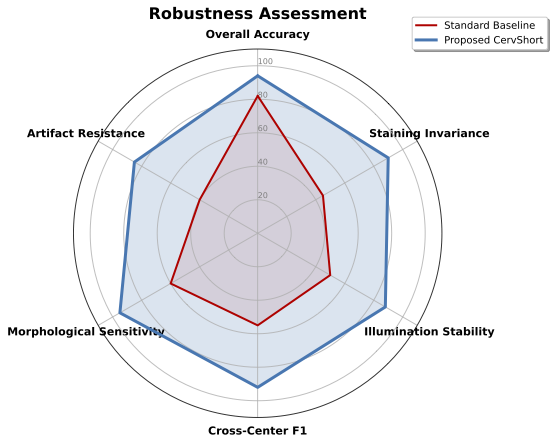
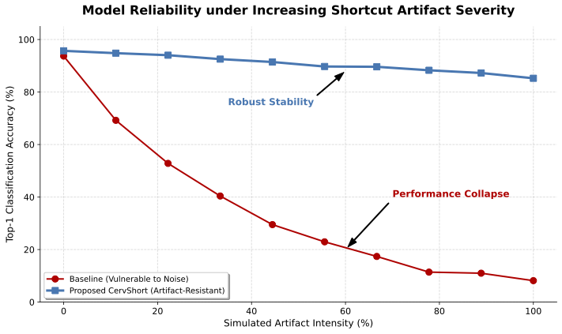
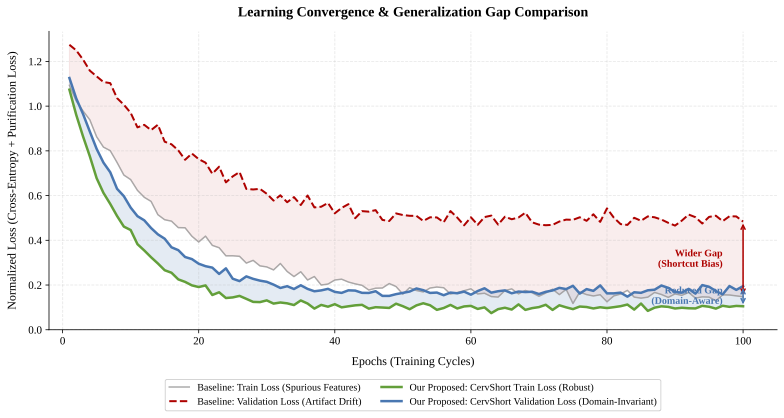

CervShort: Domain-Aware Shortcut Disruption for Robust Cervical Cancer Cytology Classification
A tri-path feature purification framework that isolates true pathological morphology from spurious acquisition artifacts — achieving state-of-the-art cross-center robustness in cervical cytology AI.
Teerapong Panboonyuen
College of Computing, Khon Kaen University & MAPS Research Center, Chulalongkorn University, Thailand
Supported by C2F Postdoctoral Fellowship, Chulalongkorn University
Figure 1. Overview of the CervShort architecture. CervShort explicitly disentangles pathological morphology from spurious acquisition cues via a Shortcut–Perturbation Module (SPM) and a Morphology Encoder, enforced by a Cross-Branch Contrastive Alignment loss that prevents overreliance on scanner artifacts, color biases, or staining inconsistencies.
95.9%
Average AUC (ViT-L/16)
8.7%
FPR95 — 3× lower than baseline
25K+
Annotated cytology patches
5
Independent clinical laboratories
94.7%
Sensitivity — exceeds senior cytotechnologists
Abstract
Disrupting Shortcuts, Restoring Morphology
Deep cervical cytology classifiers often exploit superficial cues — illumination drift, slide preparation artifacts, background debris — rather than pathological cell morphology, leading to poor generalization across laboratories. We introduce CervShort, a domain-aware shortcut disruption framework tailored for cytology-based cervical cancer screening. CervShort employs a tri-path feature purification module that (1) isolates cell-centric morphological descriptors via adaptive nucleus–cytoplasm segmentation, (2) suppresses artifact-sensitive representations through a degradation-invariance projector, and (3) learns distribution-stable features using a prototype-alignment constraint across staining and illumination conditions. To further mitigate hidden shortcuts, we synthesize artifact-shift augmentations simulating realistic laboratory-dependent perturbations, deployed as adversarial negatives during training. Evaluations on a large-scale multi-center Thai cervical cytology dataset demonstrate that CervShort substantially improves cross-center robustness, reduces artifact-induced misclassification, and yields interpretable morphology-grounded attention maps — advancing reliable, equitable cervical cancer AI for real-world clinical workflows.
Methodology
Tri-Path Feature Purification
CervShort decomposes latent representations into pathology-relevant and shortcut-sensitive components — Zmorph and Zspur — and enforces causal grounding through three synergistic learning paths.
Path 01
Segmentation-Guided Morphology Encoding
An auxiliary nucleus–cytoplasm segmentation head generates binary masks Mnuc and Mcyt. Masked average pooling anchors the morphology embedding to diagnostically meaningful cellular regions, preventing background-driven shortcut exploitation.
Path 02
Degradation-Invariant Shortcut Suppression
A degradation-invariance projector hω isolates spurious signals via an orthogonality constraint between Zmorph and Zspur, and a frequency-domain penalty that suppresses high-frequency artifact signatures in the spurious subspace.
Path 03
Cross-Domain Prototype Alignment
Per-class, per-domain prototype vectors are maintained and aligned across staining and illumination domains via a prototype consistency loss, encouraging morphology features to remain invariant across labs, stains, and digitizer differences.
In parallel, Artifact-Shift Adversarial Augmentation (ASAA) synthesises realistic domain-specific perturbations — illumination drift, local debris occlusion, staining variations, focus blur, and microscopic noise — serving as adversarial negatives during optimisation. The final objective jointly minimises classification loss, morphology consistency, degradation-invariance, prototype alignment, and adversarial artifact robustness.
Experimental Results
State-of-the-Art Robustness Across Five Independent Laboratories

Figure 2 (Left). Multi-dimensional robustness assessment across six clinical axes. CervShort yields a broad, isotropic coverage polygon — demonstrating balanced superiority in cross-center F1, staining invariance, illumination stability, and artifact resistance.

Figure 2 (Right). Top-1 accuracy under progressively increasing simulated artifact intensity (0%–100%). The standard baseline suffers catastrophic collapse; CervShort maintains a gracefully degrading stability profile even under maximum artifact saturation.

Figure 3. Learning convergence curves and empirical generalization gaps over 100 training epochs. The baseline (red) exhibits a wide generalization gap — a signature of overreliance on shortcut features. CervShort (blue) achieves rapid convergence and a dramatically reduced gap, validating the effectiveness of the tri-path feature purification module in encoding distribution-stable cytological morphology.
Cross-Center Diagnostic Performance
AUC (%) ↑ and FPR95 (%) ↓ averaged across Labs A–E. All backbones benefit substantially from CervShort integration.
Backbone
Variant
AUC ↑
FPR95 ↓
ResNet-18
w/o CervShort
82.7
30.0
ResNet-18
w/ CervShort
90.5
14.3
ViT-L/16
w/o CervShort
87.2
25.2
ViT-L/16
w/ CervShort (Ours)
95.9
8.7
Senior Cytotechnologists (n=4)
Sens 88.5%
Spec 92.3%
CervShort Final — Sensitivity / Specificity
94.7%
95.1%
Key Contributions
What CervShort Offers
01
Novel tri-path feature purification architecture. CervShort introduces a three-branch purification module that jointly extracts morphology, suppresses shortcut artifacts, and aligns cross-domain feature prototypes — enabling robust and interpretable cytology diagnosis without requiring domain labels or heavy external supervision.
02
Domain-aware shortcut disruption via adversarial artifact-shift augmentation. Realistic artifact perturbations — staining drift, illumination shifts, blur, debris, texture noise — are synthesized to explicitly challenge and remove shortcut reliance during training, acting as structured adversarial negatives rather than generic regularisers.
03
State-of-the-art robustness in cross-center cervical cytology classification. Extensive experiments across five independent Thai laboratories show CervShort substantially reduces artifact-induced misclassification, improves cross-center generalisation, and produces morphology-grounded attention maps that exceed expert cytotechnologist-level diagnostic agreement.
BibTeX Citation
Cite This Work
@article{panboonyuen2026cervshort,
title = {CervShort: Domain-Aware Shortcut Disruption for Robust
Cervical Cancer Cytology Classification},
author = {Panboonyuen, Teerapong},
year = {2026},
url = {https://kaopanboonyuen.github.io/CervShort},
note = {College of Computing, Khon Kaen University; MAPS Research
Center, Chulalongkorn University, Thailand}
}